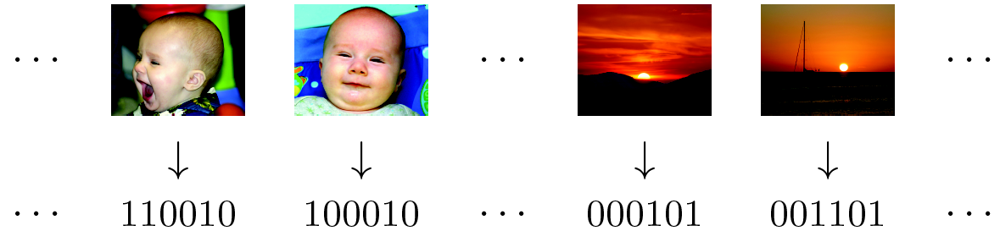

Minimal Loss Hashing for Compact Binary Codes
Version 1.1 - Updated on Aug 10, 2012.
This is an implementation of minimal loss hashing (MLH) method [1] for learning similarity preserving hash functions that map high-dimensional data onto binary codes. Binary codes received lots of recent interest because they are storage efficient and they facilitate fast retrieval.
You can download the latest version of our code from this SVN repository, or from this archive file.
The code is implemented in Matlab, with a few helper functions implemented in C++ for efficiency reasons. Please refer to the README file for instructions on usage and compilation. The code is ready for re-running experiments described in the paper on Euclidean and semantic 22K LabelMe, and on 6 other datasets (10D uniform, mnist, LabelMe, notredame, peekaboom, nursery). Please download the datasets separately from 22K LabelMe (courtesy of Rob Fergus) and 5 other datasets (courtesy of Brian Kulis).